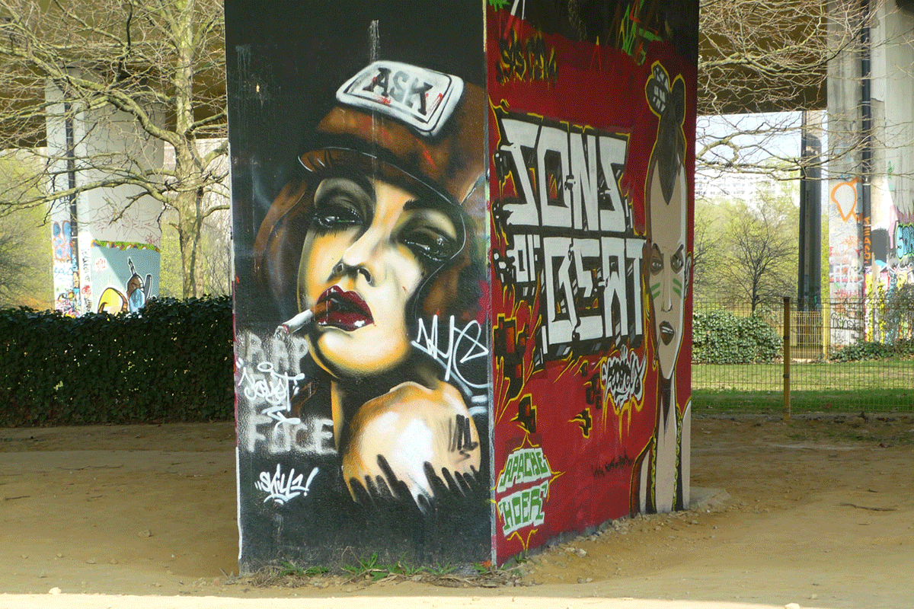
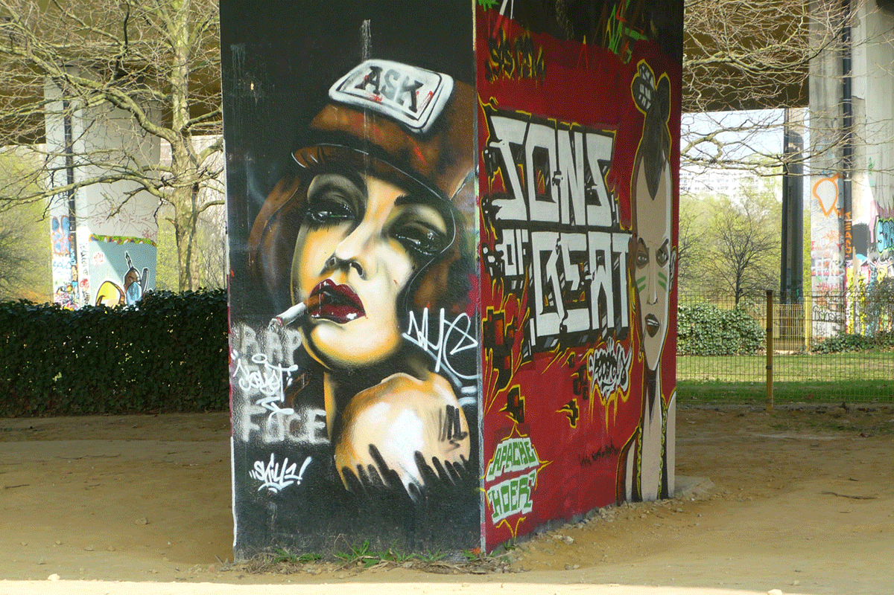

Adrien Grimmeau: Graffiti in Brussels
Neerpede Park is a huge open air art gallery. Little known by the people of Brussels and surely not included in any tour guide or do-it-yourself journey in Belgium, it lies on the outskirts of Brussels, Eddie Mercks metro stop.
The pillars of the three flyovers that cross the park have become the favourite spot of Brussels’ graffiti artists to show dozens and dozens of works of street art.
“Neerpede Park is one of those places that I call ‘no-man’s land’,” says Adrien Grimmeau, art historian and professor at Iselp, a contemporary art centre in Brussels. “Brussels’ graffiti artists moved away from the streets of the city centre, where there is less control by the police and they can make works that sometimes require up to 10 hours, sometimes even two days”.
Grimmeau has recently written the first book ever about street art in Brussels. The book, titled Dehors! L’histoire des graffiti à Bruxelles and published by CFC-editions, will be released on the 15th of June on the occasion of the exhibition Explosition. L’art des graffiti a Bruxelles – a title in between the French “explosion” and “exposition” – at the Musée d’Ixelles of Brussels.
“I chose this title for the book for two main reasons: first of all “Dehors!” – get out! – is what the teachers say to the kids who misbehave in class. Graffiti art is made by young people, often children who were considered “rebel” at school.
Secondly, I say “Dehors!” to the readers of the book, but also to the artists and to myself. Enough with the museums, go look for art in the streets!,” says Grimmeau.
The exhibition will show pictures, sculptures, paintings and installations made by almost 20 artists with a street art background. It aims to show how the artists who exhibit in the museums sometimes come from a background which is anything but academic.
The book tells the history and evolution of graffiti art in Brussels from its origins in the ‘80s until now. “It is a way to speak about Brussels, its youths and its street art,” says Grimmeau, who collected interviews with some of the most famous graffiti artists of Brussels’ milieu, namely Bonom, Muga, Obes, Na and Defo, five artists who differ in terms of topics, typology of art forms and techniques.
“During the ‘80s graffiti was a more social and political art. Afterwards, in the ‘90s, hip hop became an out-and-out underground cultural movement linked to music, rap and break-dance. Differently form today, the graffiti of the ‘80s and the ‘90s were mainly made of letters and few images in poor and degraded areas of the city,” says Grimmeau. These graffiti were also often inspired to comics, of which Belgium boasts a rich tradition. However, Grimmeau explains that the graffiti artists of the ‘80s mainly drew their inspiration from American comics, in particular Vaughn Bode. “It was more ‘cool’”, explains Grimmeau with a smile. “I know for sure that graffiti artist read comics, but it is not ‘cool’ to paint The Smurfs – Les Schtroumpfs – on the walls.”
“Now it is different. The artists want to show a different way to look at the city and take it back. They don’t want to change the world, maybe they want to make us smile or surprise us. They want to tell the people to look around themselves. “
Not only spray then, but stencils, fonts, stickers, images, tags and out-and-out paintings.
Grimmeau calls them neo-graffiti, in order to highlight these artists’ will to increase the interaction with the city and with the spot itself where the painting is realized.
“Graffiti are more site-specific, which is also what happens now with works of contemporary art in the museums.” For instance, in the case of Bonom, there is always a reason for the animal painted on a certain building. Grimmeau mentions the example of the fox falling on the wall of a building in Place du Congrès. At the feet of the Colonne du Congrès et de la Constitution there is a flame – the flame of the Unknown Soldier –, which blazes endlessly. Looking carefully, the orange fox looks like a flame pointing at the sky.
“Nowadays, in most cases graffiti artists are not inexperienced people, but they come from art schools and they want to bring art out of the museums and the schools, in the streets.”
Grimmeau notices that in the recent past Brussels’ authorities, as often as not, built “architectural monstrosity” ; in one occasion they even destroyed an art nouveau building by the architect Victor Horta. “Graffiti artists don’t paint on the walls because they hate the city, but in order to make it better and more beautiful. It is also a way to claim the public space as a social space.”
For instance, Obes believes that the city belongs to everybody and that everybody is allowed to express him or herself creatively. But if the city belongs to everybody, then someone may not agree with the graffiti. “As a matter of fact, it is difficult to come to an agreement. Here in Belgium we are very good at making laws and regulations that don’t please anyone, precisely because they’re aimed at pleasing everybody.”
 

Graffiti in Belgium are illegal and, differently from other cities in the world, there are no walls legally used for street art display of graffiti. For this reason, most of the graffiti artists interviewed for the book had problems with the law on several occasions. For example, Defo and Obes went to prison for some days. The artists are often required to repay substantial amounts of money for damages.
Bonom is the most famous graffiti artist in Brussels. He painted some beautiful graffiti of animals and dinosaurs, even if half of them have been removed. However, not even Bonom is protected and he often had problems with the law, according to Grimmeau.
“The whole graffiti process is contradictory because sometimes these artists are summoned by the authorities to paint public places, such as the tram station De Wand,” says Grimmeau.
Beside Neerpede Park , there are other “concentrations” of graffiti in the vicinity of the cultural centre Recyclart, nearby Gare du Midi o in Le Marolles, an historic neighbourhood in Brussels where, since the ’60s, artists have been meeting to make art and discuss about the problems of the city. “It is the soul of Brussels,” says Grimmeau. However, most graffiti are made along the metro lines, such as the line from Gare du Midi to Gare Central or between the station Pennenhius and Bockstael, in the neighbourhood Laeken.
Near the metro stop Porte de Namur, Bonom painted several buffalos that create the illusion, for the people observing from the metro, that the animals are running. “There are at least 20 buffalos. Even before he discovered Blu’s animations, Bonom revolutionized the way of looking at graffiti in the metro lines of Brussels: once the graffiti were painted on the trains and moved with the trains, now the trains move and the motionless graffiti come to life.” A similar dinosaur was painted by Bonom near Etterbeek Station.
In collaboration with Iselp, Grimmeau also organizes “graffiti walking tours” for organized groups of several people. You just need to contact Iselp to make arrangements.
Online Targeting Options for Pharma
Most of the people who surf the web and are naturally exposed to online advertising, sooner or later ask themselves: “How do they know?”. How do they know I like sunbeds and pancakes, how do they know I am travelling to Africa next month, how do they know I just liked that page? Well, they know.

Eccentric Energy from Mexico Way
Her shows are a cocktail of bolero, rumba, ranchero, jazz, postmodern kitsch, surreal costumes and iconography. On stage, she sings, acts, dances and tells political jokes. Already a legend in her own country and abroad, eccentric Mexican diva Astrid Hadad is now coming to Ireland for the first time.

Love for Lamps... to Take Over the World
Lovelamp is one of the artists of Dublin street art scene. In the past few years he has been attracting the attention of the public with his posters and stickers of lamps scattered all over the city. We asked him few questions about his unusual work and his opinion about Dublin street art.